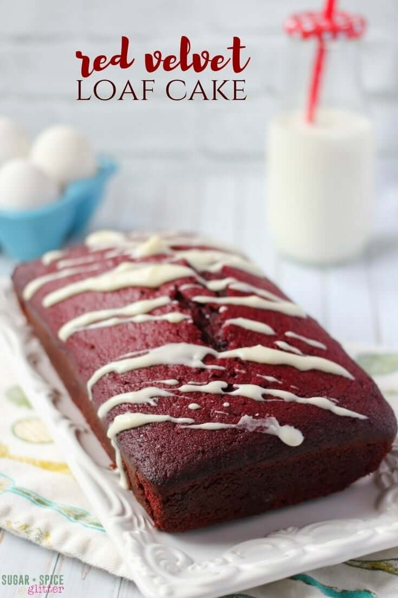
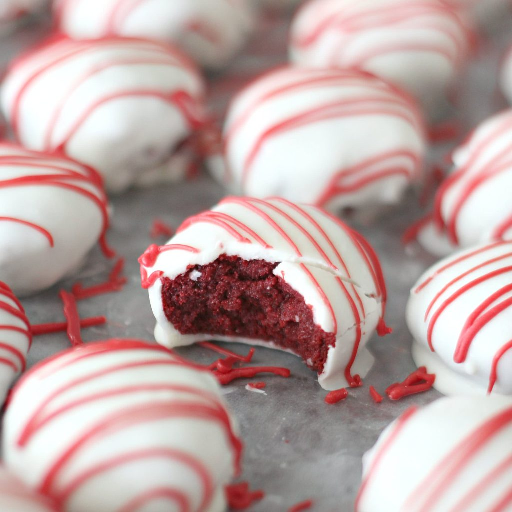
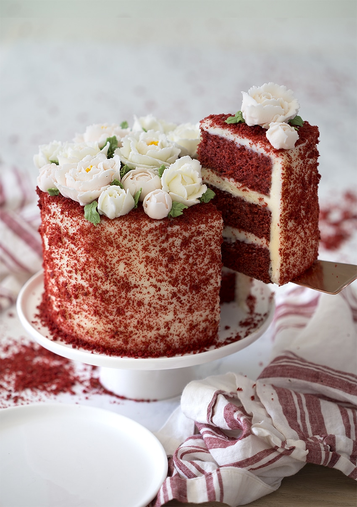
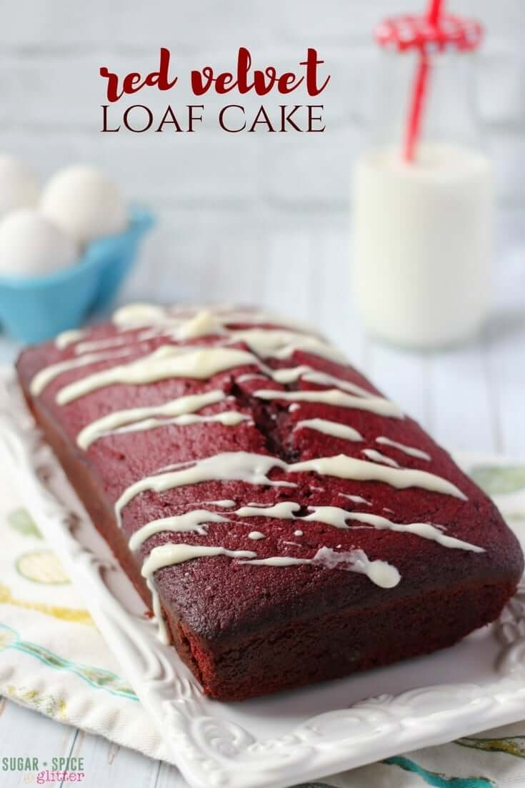
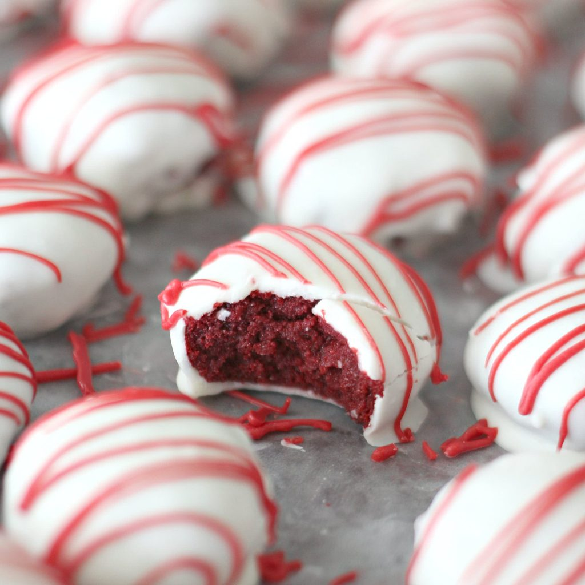
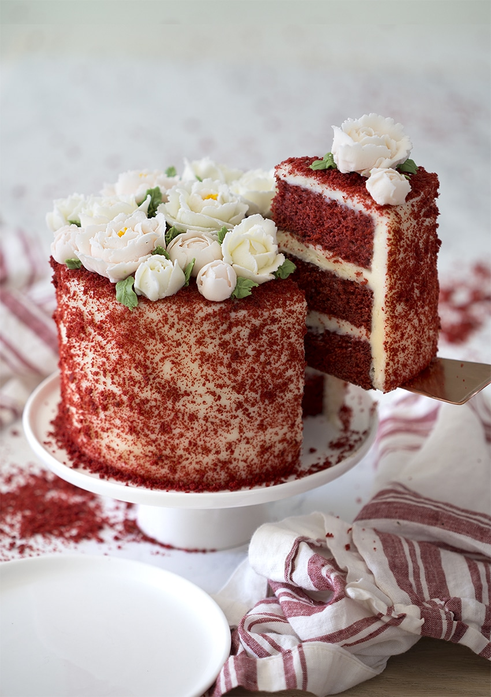
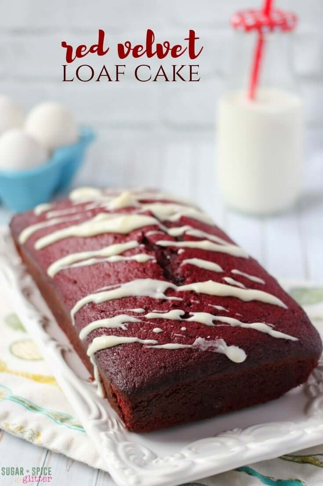
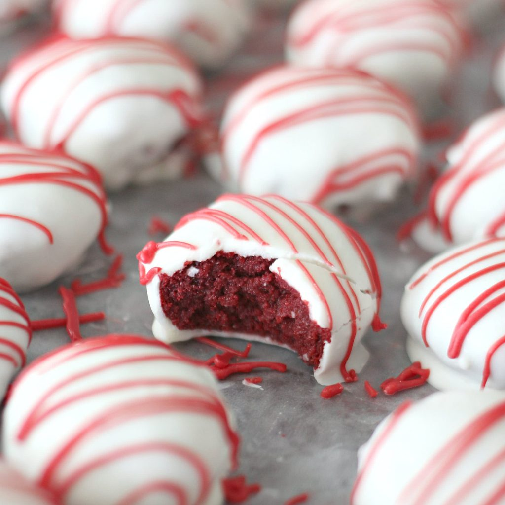
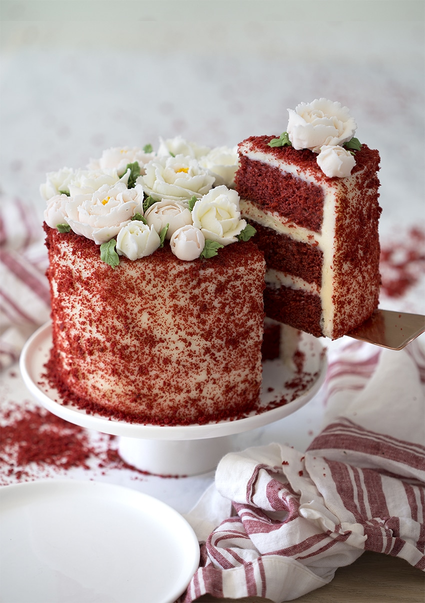

Elaboración
| Tiempo de preparación: | 90 min |
|---|---|
| Tiempo de cocción: | 60 min |
| Raciones: | 10-14 PAX |
| Nivel de habilidad: | Fácil |
- Precalentar el horno a 180º.
- Poner una hoja de papel de horno en el fondo de un molde de 24cm desmoldable y engrasar con mantequilla.
- En un bol poner la leche, el limón y el colorante. Mezclar y reservar.
- En otro bol, mezclar la harina, la levadura, la sal y el cacao y reservar.
- Batir la mantequilla con el azúcar. Añadir la vainilla y los huevos uno a uno sin parar de batir unos minutos. A esta mezcla, ir añadiendo en tres veces, de manera alterna los ingredientes secos (harina, levadura, sal y cacao) y la mezcla de leche, limón y colorante e ir batiendo hasta que quede una mezcla homogénea.
- Mezclar el vinagre y el bicarbonato y añadir a la masa. Batir hasta que quede incorporado y verter la mezcla en el molde. Cocer en el horno entre 55’/60’.
- Sacar del horno el pastel y dejar enfriar encima de una rejilla. Cuando esté frio, cortamos en tres partes. Envolvemos en papel film y los dejamos toda la noche en la nevera.
- Para el relleno: Mezclar los ingredientes hasta que queden bien integrados.
- Pintar las tres capas del pastel con el almíbar y rellenar con la mezcla. Cubrir los laterales y parte superior del pastel.
- Para la cobertura: Fundir el chocolate al microondas y dejar enfriar.
- Batir el mascarpone, añadirle el chocolate y batir a velocidad alta hasta conseguir una crema homogénea.
- En una manga pastelera con una boquilla rizada, poner un hilo de colorante rojo con la ayuda de una brocheta de madera. La rellenamos con la cobertura y decoramos.
Galeria



Consejos nutricionales
Una dulce manera de contribuir a cubrir las necesidades de ingesta diarias de vitamina A, necesaria para una buena salud ocular, y de calcio y vitamina D, nutrientes que contribuyen a fortalecer tus huesos y dientes. Por su alta densidad calórica, se recomienda reservarla para ocasiones especiales.